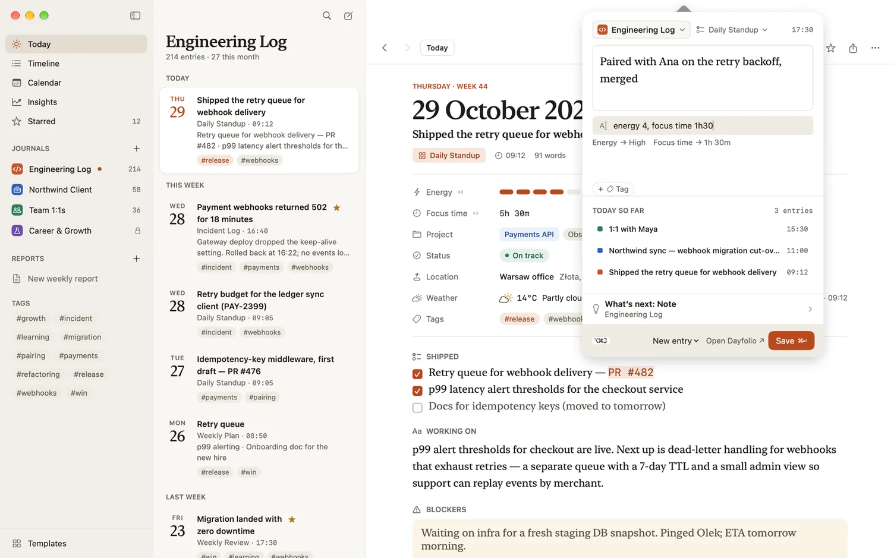

What goes in a brag document, and how to keep one
PUBLISHED 2026-10-15
A brag document is a running list of the work you’re proud of, written down when it happens, with enough detail and evidence that someone else could understand it later. The name makes some people wince, but the practice is ordinary record keeping. It’s for you first. When review season, a promotion case, a job search or a hard week comes along, you have facts instead of a vague feeling that you did good work.
Why memory isn’t enough
Your memory of your own work is less reliable than it feels:
- You remember the last few weeks clearly and the spring hardly at all.
- Work that prevents problems leaves no trace. The outage that didn’t happen is invisible.
- The help you gave other people lives in their memory, not yours.
- Your manager sees only part of what you do, and remembers less of it than you’d hope.
A brag document fixes all four, a few minutes at a time.
What goes in
More than you’d think. A useful brag document covers:
- What you shipped or delivered, and what changed because of it.
- Problems you solved or prevented: the incident you caught early, the risk you raised before it became a date slip.
- Work that isn’t in any tracker: onboarding a new teammate, fixing a broken process, writing the document everyone now uses, interviewing.
- Help you gave: reviews, mentoring, answering questions, unblocking another team.
- Praise and thanks, with who said it and a link to where they said it.
- Things you learned or did for the first time: a new tool, a talk, your first time leading a project.
- Numbers you can stand behind, from your own records or a dashboard you can link to.
And what doesn’t: every task you did (that’s a timesheet), other people’s work without saying it was theirs, and anything confidential you couldn’t show a reviewer.
What to write for each entry
Keep each entry short but complete:
- What you did, in a sentence or two.
- What changed because of it. If you don’t know yet, say so and come back when you do.
- The evidence: a link to the pull request, the document, the thread or the dashboard.
- Who noticed, if someone did.
- How much it mattered. A rough high, medium or low is enough to sort by later.
Here’s an example, not a real one: “Rewrote the onboarding checklist after two new starters got stuck waiting for access. The next new starter had every account on day one. Evidence: the checklist. Thanks from Sam in the team channel.”
How to keep one going
The hard part of a brag document isn’t starting it. It’s still writing in it in October.
- Write it the same day. A win written down within hours keeps its details: the numbers, the names, the link.
- Make it fast. If an entry takes more than a couple of minutes, you’ll stop writing them.
- Do a weekly sweep. At the end of the week, look back for anything you missed: closed tickets, merged work, a message of thanks.
- Tag the themes, such as #mentoring or #reliability, so the shape of your year shows when you look back.
- Keep it raw. It’s a record for you, not the review itself. You’ll choose and polish later.
- Read it once a month. You’ll spot patterns, and gaps worth raising in your next 1:1.
Using it at review time
When the review comes, your brag document is the pile of evidence: pick the three to five wins that mattered most, group the smaller ones into themes, and write them up. Our article on how to write your year-end self-review takes it from there.
How Dayfolio helps
Dayfolio is a work journal for iPhone, iPad and Mac, with a template for each kind of entry you write. Its Brag document template is in the General pack, described as “Capture a win when it happens, so review season isn’t a memory test.” It’s ticked by default when you make a journal from the General, Software Engineering or Management & Leadership pack, and you can add it to any journal from the library.
Each brag document entry has:
- Win, for what happened, with the question “What did you do, and what changed because of it?”
- Impact: High, Medium or Low.
- Evidence, a link, and a second Evidence field for files, such as a screenshot or a PDF. Adding files comes with the purchase.
- Kudos from, the person who noticed.
- Tags, for your themes.
Capture it in seconds. On iPhone, touch and hold the New entry button and choose Brag document. On the Mac, press Option-Command-J (⌥⌘J) in any app to open quick entry from the menu bar, pick Brag document from its template menu and write the win; the Fill line under it takes the other fields, such as “impact high”.

Star the wins that matter most. Starred entries show a filled star everywhere, and Search finds them all with its Starred filter.
Find them again. Search can narrow to the Brag document template, to a tag or to a date range. Kudos from is a person, and a person’s name in an entry has “Entries with …” in its menu, which lists every entry that names them, brag document entries included.
Turn it into a review. In Reports, a Performance review (the last six months, unless you choose other dates) and the Year-end self-review (this year so far) both read your brag document entries the way a review wants them: the Win field first, then the Evidence links, with the titles of your starred entries first in Highlights. Making a report and reading it on screen is free; keeping and sending reports come with the purchase.
Start with today’s win
You don’t need to reconstruct the year to begin. Write down one thing from this week that went well, with its link, and add the next one when it happens.
- See the Brag document template, with every field and a filled-in example.
- Read about templates and fields, quick capture and Reports in the Dayfolio guide.
- Get Dayfolio on the App Store for iPhone, iPad and Mac.